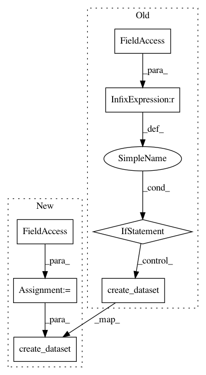

3742a10d99545440279bfebfe078a724b1d672bc,ilastik/applets/dataSelection/dataSelectionSerializer.py,DataSelectionSerializer,_serializeToHdf5,#DataSelectionSerializer#Any#Any#Any#,81
Before Change
infoGroup.create_dataset("fromstack", data=datasetInfo.fromstack)
if datasetInfo.drange is not None:
infoGroup.create_dataset("drange", data=datasetInfo.drange)
if datasetInfo.axistags is not None:
infoGroup.create_dataset("axistags", data=datasetInfo.axistags.toJSON())
axisorder = "".join(tag.key for tag in datasetInfo.axistags)
infoGroup.create_dataset("axisorder", data=axisorder)
if datasetInfo.subvolume_roi is not None:
infoGroup.create_dataset("subvolume_roi", data=datasetInfo.subvolume_roi)
self._dirty = False
After Change
// Pull the axistags from the NonTransposedImage,
// which is what the image looks like before "force5d" is applied,
// and before "c" is automatically appended
axistags = self.topLevelOperator._NonTransposedImageGroup[laneIndex][roleIndex].meta.axistags
infoGroup.create_dataset("axistags", data=axistags.toJSON())
axisorder = "".join(tag.key for tag in axistags)
infoGroup.create_dataset("axisorder", data=axisorder)
if datasetInfo.subvolume_roi is not None:
infoGroup.create_dataset("subvolume_roi", data=datasetInfo.subvolume_roi)
In pattern: SUPERPATTERN
Frequency: 3
Non-data size: 7
Instances
Project Name: ilastik/ilastik
Commit Name: 3742a10d99545440279bfebfe078a724b1d672bc
Time: 2014-07-31
Author: bergs@janelia.hhmi.org
File Name: ilastik/applets/dataSelection/dataSelectionSerializer.py
Class Name: DataSelectionSerializer
Method Name: _serializeToHdf5
Project Name: ilastik/ilastik
Commit Name: 83dab9d59e6b135266a2e30a6da72362b2eee85f
Time: 2013-04-29
Author: bergs@janelia.hhmi.org
File Name: ilastik/applets/dataSelection/dataSelectionSerializer.py
Class Name: DataSelectionSerializer
Method Name: _serializeToHdf5
Project Name: ilastik/ilastik
Commit Name: fd8ee1b947eee5de32b2f030200758643ce886ad
Time: 2013-05-15
Author: bergs@janelia.hhmi.org
File Name: ilastik/applets/dataSelection/dataSelectionSerializer.py
Class Name: DataSelectionSerializer
Method Name: _serializeToHdf5